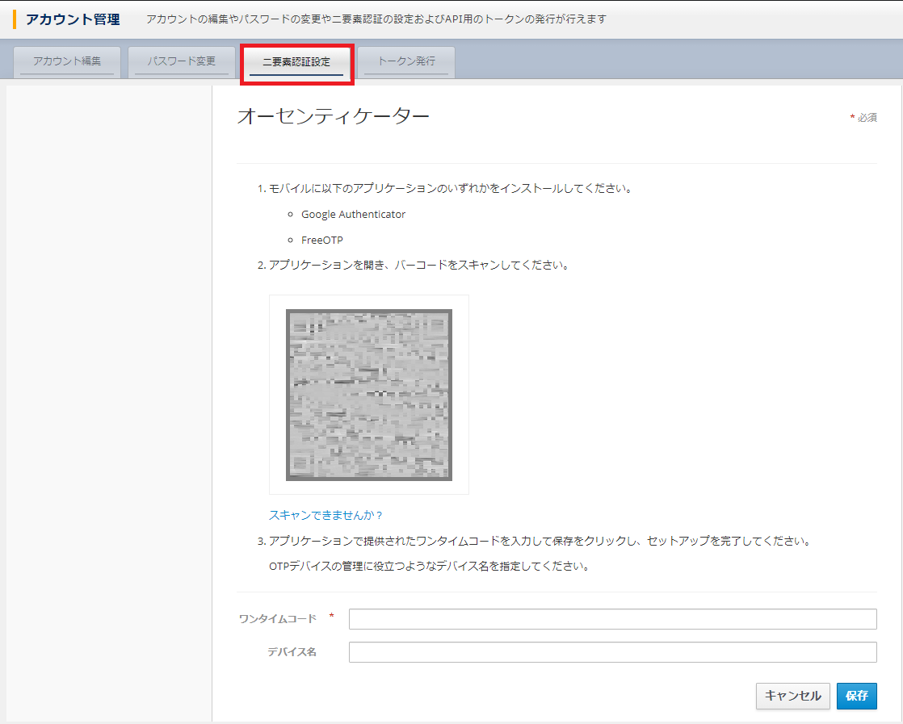
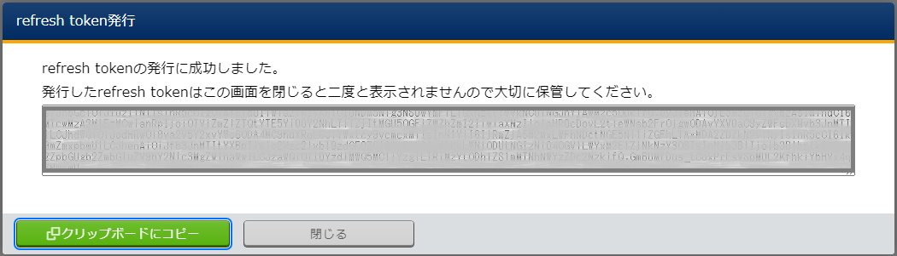

1. ログイン方法¶
1.1. はじめに¶
本書は、オーガナイゼーション作成直後の初回ログイン方法について記載したものです。
1.2. 初回ログイン¶
- 初回ログイン時は、必ず次のユーザー名とパスワードでログインしてください。

表 1.27 項目説明¶ 項目名
説明
ユーザー名またはメールアドレス管理者から指定したユーザー名またはE-mailアドレスe.g. user または user@example.com ※パスワード管理者から指定したパスワードe.g. password ※Tip
※初回ログイン時は、オーガナイゼーション作成 で指定した管理者のログインID(ユーザー名、E-mailアドレス)、初期パスワードを使用してください。 - パスワードの更新を行い、送信 ボタンを押下します。

- アカウント情報の更新し、 更新 ボタンを押下します。

- 下記のようにWorkspace管理画面が表示されます。

1.3. 言語切り替え¶
- 言語の切り替えは、ログイン画面から対象の言語を選択して切り替えて下さい。

1.4. 個人設定¶
個人設定では、自身のアカウント編集、パスワード変更、二要素認証設定、トークン発行が行えます。
- 個人設定はログインユーザーのアイコンを選択して表示されるメニューから を選択することにより設定できます。

注釈
Exastro IT Automation利用中は、メニュー - アカウント管理 は表示されません
1.4.1. アカウント編集¶
- アカウント編集より、Eメール、名、姓を変更することができます。

注釈
※ユーザー名は変更できません。
1.4.2. パスワード変更¶
- パスワード変更より、自身のパスワードを変更することができます。

1.4.3. 二要素認証設定¶
- 二要素認証設定より、パスワード＋他の認証方式でのログインが行えるようになります。

{kind=link}
1.4.4. トークン発行¶
本システムにおいて、APIを呼び出す際に必要となるアクセストークンがありますが、アクセストークンの発行には、本説明で説明するリフレッシュトークンが必要となります。
- トークン発行より、API実行に必要なトークンの発行ならびに発行したトークンの一覧表示を行うことができます。

- 初めてトークンを発行する際は、発行 ボタンを押下して、必要な情報を入力しトークンを発行することができます。二要素認証を使用している場合は、二要素認証で使用しているアプリケーションのワンタイムパスワードを入力する必要があります。

- 発行されたトークンは、再表示できませんので必ず発行結果の画面のトークンを保存する必要があります。
 - 発行したトークンの有効期限は、トークン一覧で確認できます。

- 発行したトークンが不要となった際は、削除 ボタンを押下して、トークンを削除することができます。
 削除確認で本当に削除する場合は、yes を入力して、はい、削除します ボタンを押下します。
削除確認で本当に削除する場合は、yes を入力して、はい、削除します ボタンを押下します。
警告
削除した際、すべてのトークンが無効となります。
{kind=link}